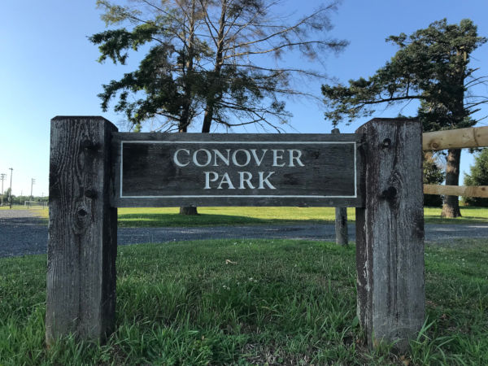
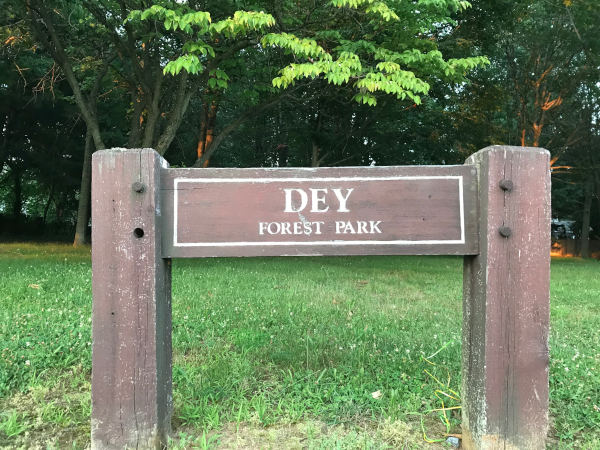
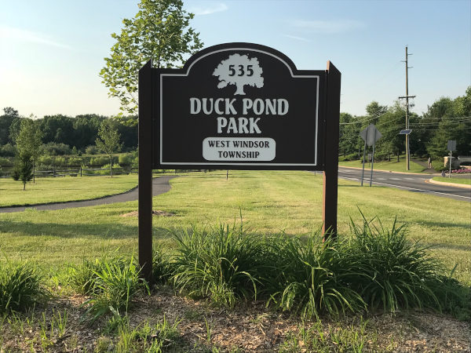
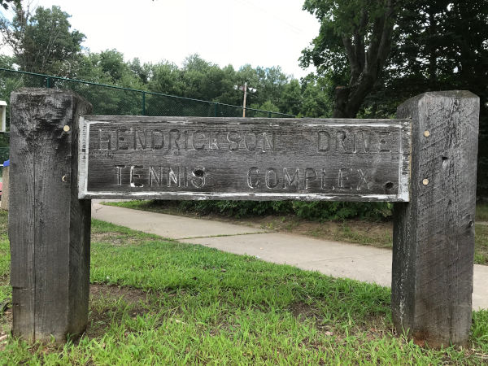
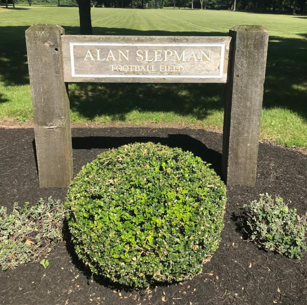
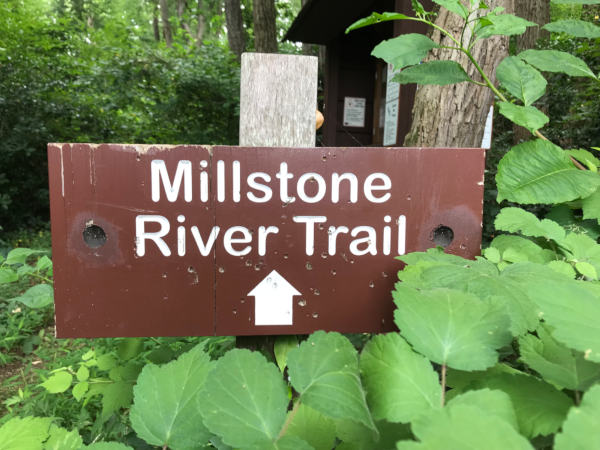
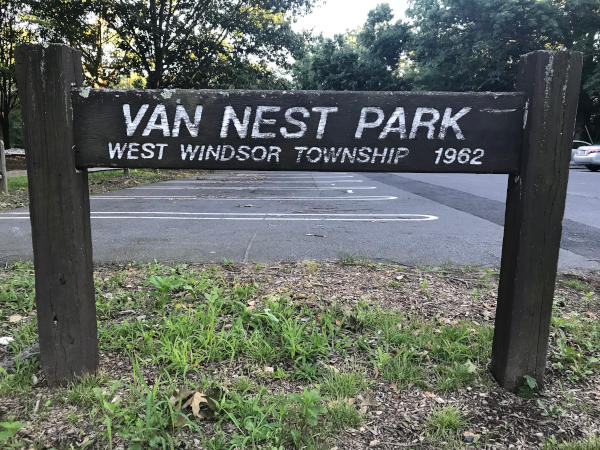
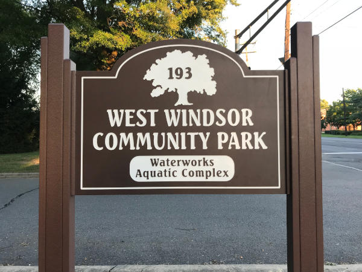
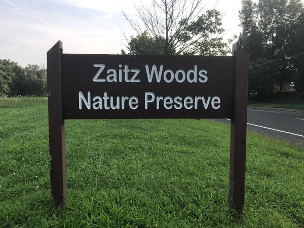

NOTICE:
Smoking and use of tobacco products is restricted in all public parks and recreation facilities owned or leased by the Township of West Windsor (Township Code Chapter 140).
Conover Field
This site includes various sports fields including five soccer fields, five baseball fields and one softball field. These fields are maintained by the Township and are utilized by the various Township sports organizations. West Windsor leases this land from the Mercer County Park Commission.
Dey Forest Park
This one-acre neighborhood park is located just off Cranbury Road, on Carlton Place. Planted with many pine trees, this park is named in tribute to Larry and Lollie Dey, who once farmed this and surrounding property.
Duck Pond Park
This Park includes over 120 acres that is approximately 60 acres of nature preserve and 60 acres of active recreation. Currently, the park includes three illuminated soccer fields and associated parking. Plans for the future include tennis courts, basketball courts, walking paths, picnic areas and a pond. Duck Pond Park is located on Meadow Road between Clarksville Road and Bear Brook Road.
Hendrickson Drive Tennis Complex
Located on Hendrickson Drive, adjacent to Route 571, this complex has five lighted tennis courts, a playground and a practice wall.
Lewis B. Chamberlin Park
This neighborhood Park with playground equipment is located on Slayback Drive and Park Hill Terrace off of South Mill Road in Princeton Ivy East Development.
Millstone River Preserve
The Millstone River Preserve is located on the south side of Millstone Road at the Plainsboro border. The Preserve has several walking/hiking trails. The trails traverse through varied habitat – upland oak forest, wetlands/floodplain along Millstone River, and 30'-40' high bluffs overlooking the River suited for picnicking or birding. The river can be accessed for canoes or kayaks near the Millstone Road Bridge.
Rogers Preserve
Rogers Preserve is located along the Big Bear Brook across Clarksville Road from Grovers Mill Pond. The Preserve has two walking/hiking trails. The trails traverse through varied habitat – an old tree nursery, upland oak forest; and wetlands/floodplain along Big Bear Brook. In the center of the old tree nursery is an open area suited for picnicking or birding.
Ron Rogers Arboretum
The Ronald R. Rogers Arboretum was dedicated in honor of the late Ronald R. Rogers who is remembered as West Windsor's Forester, an honor that reflects the tremendous time and effort he volunteered to promote and implement community forestry in the Township. The purpose of the arboretum is to present the wondrous strength, beauty and benefit of many species of Quercus or oak trees as well as ecologically related tree species that grow in West Windsor and its environs. The site of the arboretum is a 25-acre parcel of land that consists of approximately 12 acres of open field and 13 acres of mature woodland. The arboretum is also the site of the September 11 memorial. The memorial is intended to honor the memory of those who left their homes that day to participate in the daily tasks of our free society and never returned. The memorial, which consists of twin reflecting pools, is constructed of the essential elements of life—water, air and organics—and is designed as a space for contemplation of the emotions that are brought to the surface by the events of September 11. Steel from the World Trade tower is also on display near the pools.
Trolley Line Trail
The Township, in cooperation with PSE&G, constructed a paved pedestrian/bike path that extends from Rabbit Hill Road to Penn Lyle Road traversing through Community Park and several residential neighborhoods via the PSE&G right of way.
Van Nest Park
Features of this park include a picnic pavilion with grills and picnic tables, playground equipment, dock and boat launch and open space. The Township, in cooperation with the US Army Corps of Engineers and the NJ DEP, implemented an aquatic habitat restoration of the Grover’s Mill Pond at Van Nest Park in 2009. Silt that had built up over decades was removed to improve the depth of the pond to about 6’-7’. Artificial habitat structures were added and fish were stocked in the pond. Located on Cranbury Road portable bathroom facilities are available at this site. Pavilion rentals are also available. A memorial to the hysteria of War of the Worlds which “took place” in the hamlet of Grovers Mill is also on display.
West Windsor Community Park
This 123-acre park is the main active recreational facility in the township. The park includes a playground, walking-jogging paths, two basketball courts, two dog parks, a skate park and two tennis courts and is home to the West Windsor Water Works Family Aquatic Center. The park also offers Little League baseball and softball fields, a Babe Ruth field, football/lacrosse fields and soccer fields utilized by the various Township sports organizations.